Semaine 1
Lundi – Bas du corps
Routine genou & periostite
Squat saut – 3 x 10
?
Exercice explosif pour les jambes, saut après squat.

Step up – 3 x 10
?
Monter sur une marche, travail fessiers et cuisses.
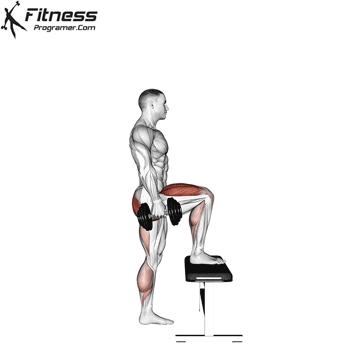
Pont fessier – 3 x 10
?
Renforcement des fessiers et lombaires.
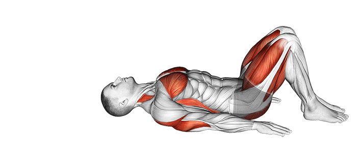
Gainage – 3 x 30 sec
?
Renforcement de la sangle abdominale.
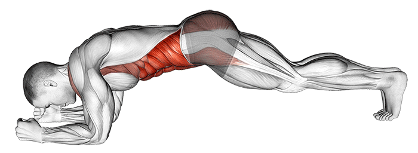
Sprint – 6 x 20m / 4 x 30m
?
Travail explosif et cardio par sprints courts.

Mardi – Haut du corps
Routine genou & periostite
Pompes – 3 x 10
?
Renforcement des pectoraux, triceps et épaules.

Rowing elastique – 3 x 12
?
Travail du dos avec élastique.
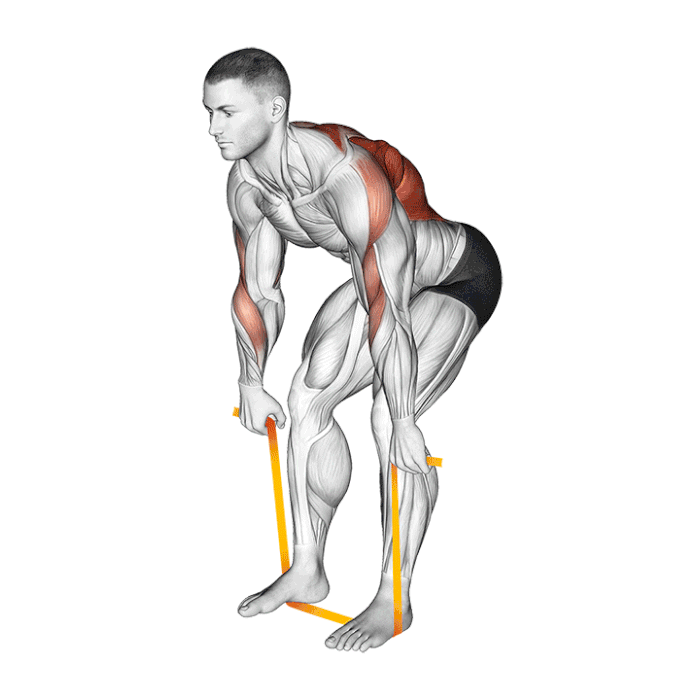
Curl biceps – 3 x 10
?
Renforcement des biceps avec élastique.
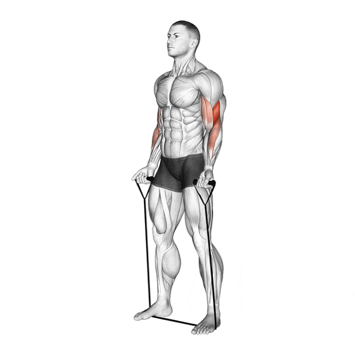
Extensions triceps – 3 x 10
?
Travail des triceps avec élastique.
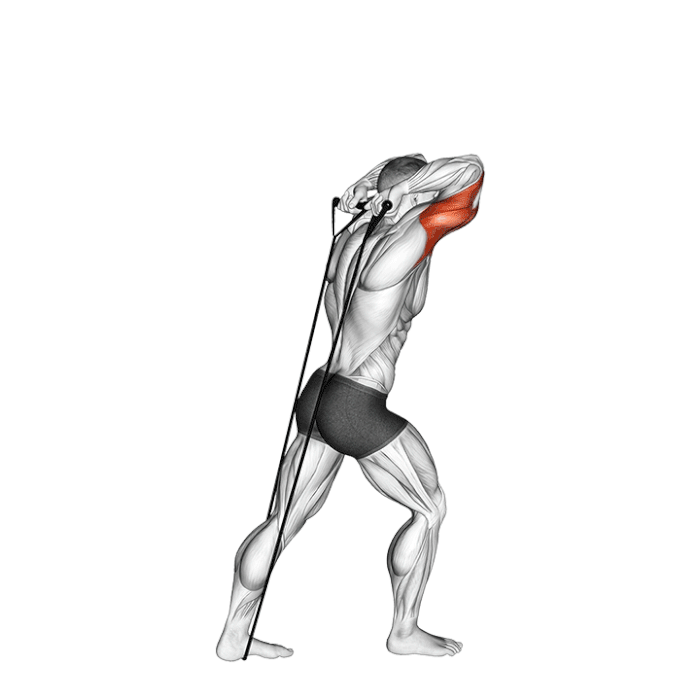
Course fractionnée – 30/30 x 6
?
Course en intervalles de 30 sec effort / 30 sec repos.
Mercredi – Core dynamique
Routine genou & periostite
Planche – 3 x 30s
?
Renforcement abdominal profond.
Crunch rotation – 3 x 20
?
Renforcement des obliques avec rotation.
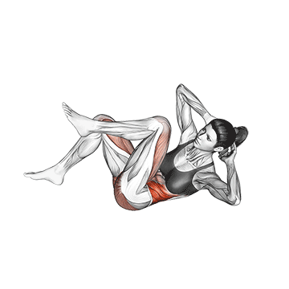
Superman – 3 x 20s
?
Renforcement du dos et lombaires.
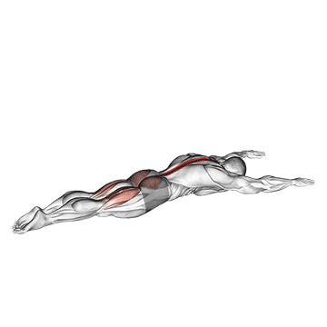
Changement d'appui – 5 x 20s
?
Travail d’équilibre et gainage dynamique.
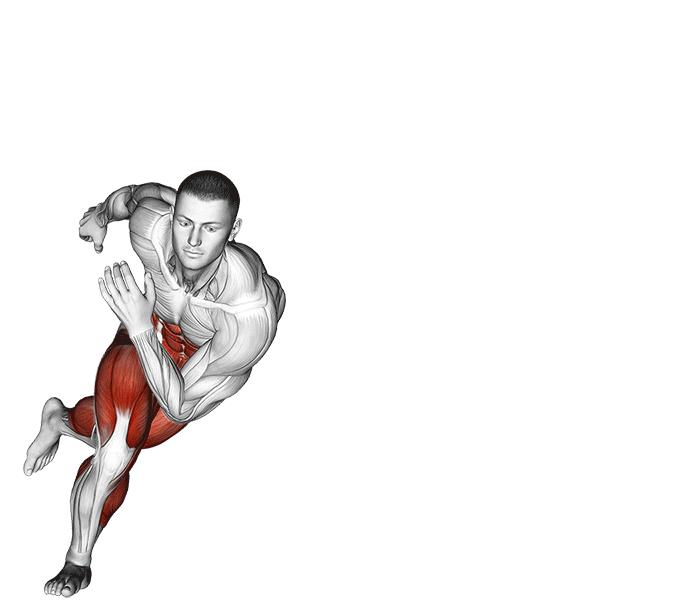
Pas chassé explosif – 4 x 20m
?
Travail de déplacement latéral rapide.
Jeudi – Full body
Routine genou & periostite
Burpees modifiés – 3 x 8
?
Exercice complet à intensité modérée.

Shadow boxing – 3 x 30 sec
?
Travail cardio et coordination avec élastique.
Squat sumo isométrique – 3 x 10 / jambe
?
Renforcement des adducteurs en isométrie.
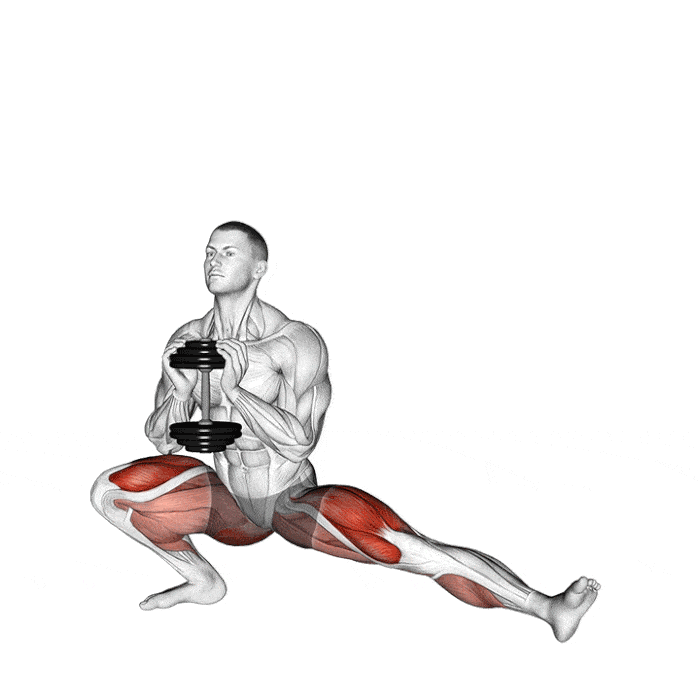
Planche – 3 x 30sec
?
Renforcement abdominal.
Gainage bras tendu – 2 x 45 sec
?
Gainage avec bras tendus pour intensifier.
Vendredi – Endurance spé
Routine genou & periostite
4 x 3 min course à intensité moyenne (80 %)
?
Travail cardio endurance à 80% FC max.
Gainage oblique – 3 x 30 sec / côté
?
Renforcement des obliques.
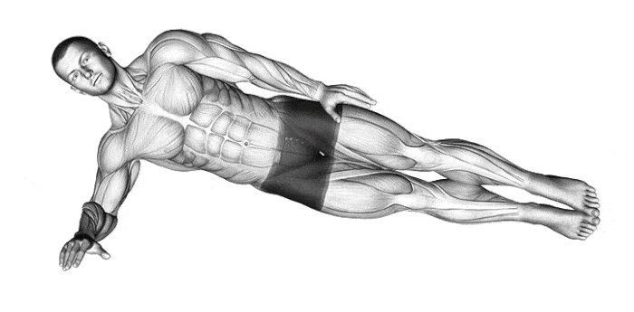
Pompes – 3 x 10
?
Renforcement haut du corps.
Step rapide – 4 x 20 sec / côté
?
Travail rapide de jambes.